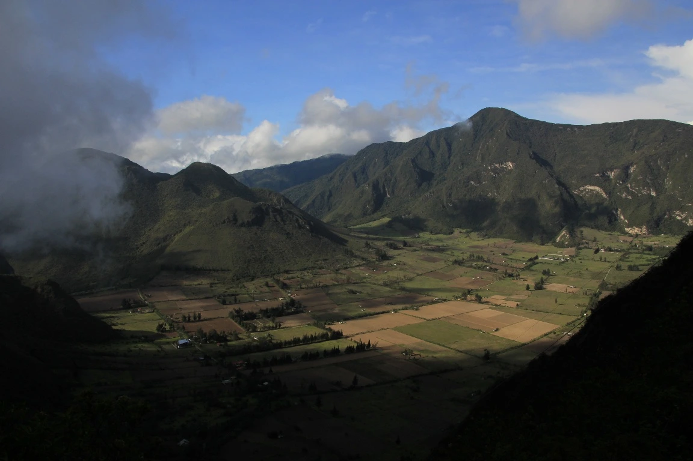

Rutas

Cumbre icónica accesible desde el teleférico, con senderos de páramo y vistas espectaculares de Quito y la cordillera andina.

Reserva natural con bosques andinos y pajonales, ideal para una caminata completa en contacto con la biodiversidad.

Cráter volcánico habitado con rutas suaves, paisajes únicos y una experiencia diferente dentro de un entorno agrícola.

Volcán activo con una ruta exigente que atraviesa formaciones volcánicas hasta su cráter humeante.

Volcán extinto con senderos accesibles y vistas panorámicas perfectas para aclimatación y caminatas moderadas.

Ruta tranquila entre bosques nublados, ríos y cascadas, ideal para desconectarse cerca de la ciudad.